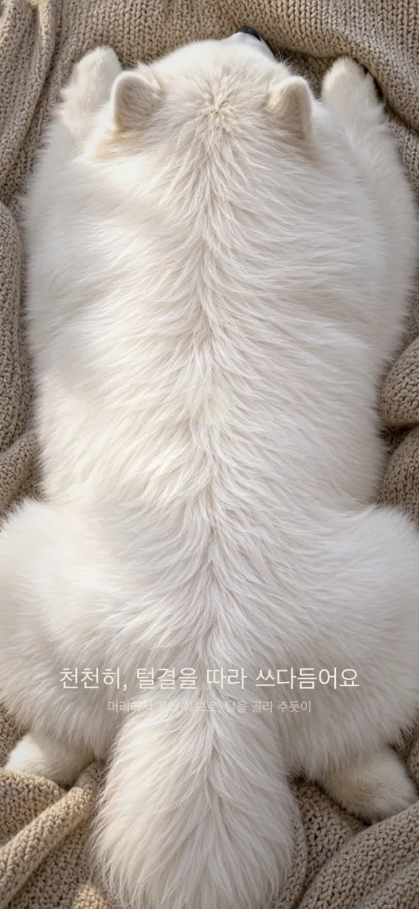
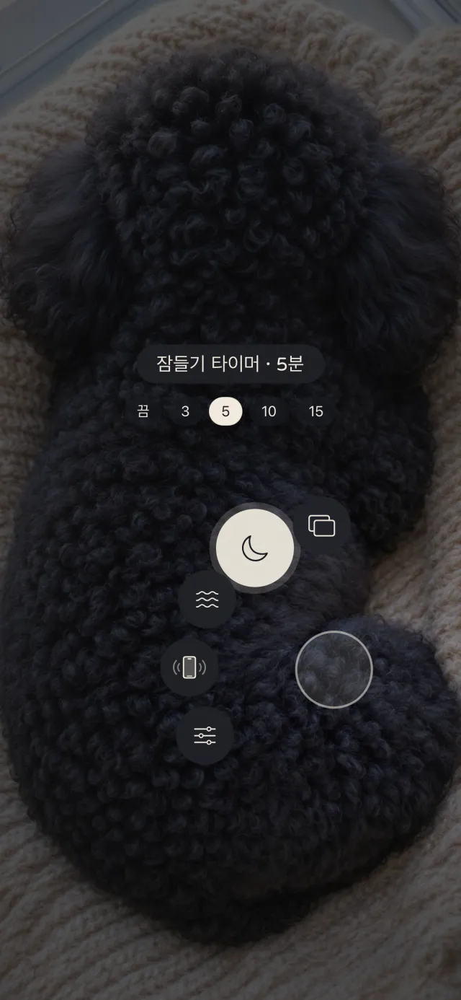
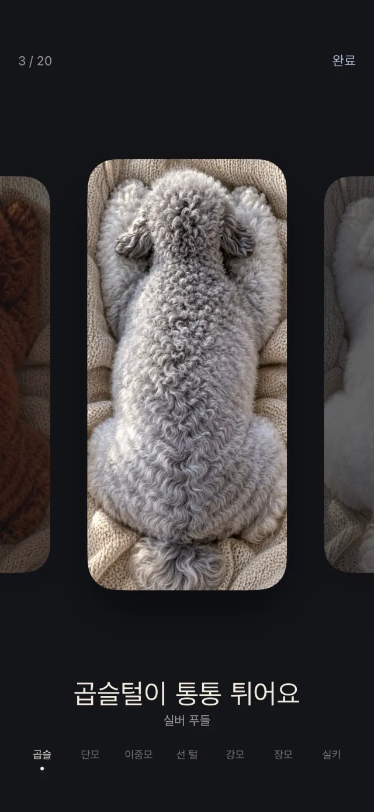

자기 전에 쓰는 iPhone 앱
잠든 강아지를 쓰다듬으며
천천히 쉬어 보세요.
털결 방향으로 천천히 쓰다듬습니다. 털은 손가락 아래에서 눕고, 손을 떼면 다시 일어납니다. 계속 쓰다듬으면 강아지의 숨소리가 느려지고 깊이 잠듭니다.
App Store에서 다운로드- ✓ 강아지 20마리, 털 종류 7가지
- ✓ 점수, 과제, 먹이 주기 없음
- ✓ 계정 불필요

촉감
털이 실제로 움직입니다
털결 방향으로 쓰다듬으면 털이 손가락 쪽으로 눕고 천천히 되돌아옵니다. 털결 반대 방향으로 쓰다듬으면 털이 일어났다가 잠시 뒤에 가라앉습니다. 곱슬털은 튀어 오르고, 긴 털은 손을 따라 흔들리며, 짧은 털은 매끈한 상태를 유지합니다.
메뉴
손가락을 멈추면 엄지 옆에 메뉴가 열립니다
쓰다듬는 동안 화면에는 아무것도 표시되지 않습니다. 강아지를 바꾸거나 타이머를 설정하려면 손가락을 0.8초 동안 움직이지 않고 누르고 있습니다. 엄지 옆에 버튼 다섯 개가 열립니다. 손을 떼지 말고 원하는 버튼으로 미끄러뜨린 뒤 놓으세요.

강아지
강아지 20마리를 한 마리씩 만납니다
블랙 푸들, 라테 숏헤어, 시바견, 사모예드, 골든 리트리버는 무료입니다. 나머지 15마리는 회원용이며, 20초 동안 체험해 보거나 광고를 보면 그날 하루 동안 쓰다듬을 수 있습니다.

취침
강아지가 잠들면 나도 졸음이 옵니다
약 1분 동안 천천히 쓰다듬으면 강아지가 깊이 잠들고 화면이 어두워집니다. 수면 타이머를 켜 두면 시간이 끝날 때 숨소리가 서서히 사라지고 화면이 검게 바뀝니다. 한 번 탭하면 돌아옵니다.
▲ 쓰다듬는 동안 화면에 버튼이 없습니다.
이럴 때 사용합니다
- 잠자리에 누웠을 때
- 마음이 가라앉지 않을 때
- 버스나 줄을 기다릴 때
- 키우던 강아지가 그리울 때
상세 정보
| 강아지 | 20마리(무료 5마리) |
|---|---|
| 털 | 7종류: 곱슬털, 짧은 털, 이중모, 곧추서는 털, 거친 털, 긴 털, 실크 같은 털 |
| 소리 | 아주 희미한 숨소리만 나며 끌 수 있습니다 |
| 햅틱 | 강아지가 반응할 때 가끔 진동이 한 번 울리며 끌 수 있습니다 |
| 계정 | 필요 없음 |
| 가격 | 무료(광고 포함). 회원은 한 번만 결제합니다 |
| 요구 사양 | iOS 17 이상의 iPhone |
광고는 강아지 선택 화면과 설정 화면의 아래쪽에만 표시됩니다. 쓰다듬는 화면에는 광고가 나오지 않습니다.
무료
- 강아지 5마리
- 수면 타이머, 숨소리, 햅틱 사용 가능
- 강아지 선택 화면과 설정 화면 아래쪽에 광고 표시
- 광고를 보면 잠긴 강아지 한 마리를 그날 하루 쓰다듬을 수 있음
회원(한 번만 결제)
- 강아지 20마리 전체
- 광고 없음
- 나중에 추가되는 강아지 포함
- 새 휴대폰에서는 같은 Apple 계정으로 복원